CO2 Transcritical Systems Training Manual
Revision 1, April 2018
General CO2 Information 8
Safety Considerations 10
System Schematic Correlation with PH Diagram 20
Liquid/Suction Heat Exchanger Bypass System (Where Applicable) 24
Medium Temperature Compressors 26
Heat Reclaim 26
Emergency Back-Up Systems 27
Parallel Compression 27
Relief Valves 33
Leak Testing 34
Pressure Testing 34
Evacuation/Charging 34
Oil Charging 35
Startup Sequence 36
After Startup 37
Oil Changes 37
Introduction 40
Schematic 41
Hot Gas Defrost - Additional Considerations 41
Note: This document is presented for training purposes only and is subject to change without notice. For additional technical support, please contact the Hussmann Technical Support Center:
Hussmann Technical Support Line: 1-800-592-2060.
Transcritical CO2 refrigeration systems are gaining acceptance in the supermarket refrigeration industry. National and international policies that originally targeted the reduction of CFCs are being expanded to include HCFCs and HFCs. Technology advancements in CO2 systems are making these systems more economically viable, in terms of both equipment and installation cost but also energy and operating costs. The intent of this document is to serve as a training manual to support Hussmann’s CO2 transcritical booster system training. This training will describe aspects of the design, installation,
and operation of these systems. The current context for this type of system is primarily supermarket refrigeration.
CO2 as a refrigerant will be compared to HCFCs such as R-22, and HFCs such as R-404a and R407a, for the purposes of this manual. Other HFO blends such as R448a and R449a will also be compared. The content herein is presented with the assumption that users have knowledge of how these refrigerants operate in direct expansion refrigeration systems.

Carbon Dioxide, or CO2, is a naturally occurring compound in Earth’s atmosphere. It is the fourth most common atmospheric compound, behind nitrogen, oxygen, and argon. Carbon dioxide is an integral part of the life cycle of plant and animals, as the primary product of respiration in animals and humans, and the primary carbon source for plants via photosynthesis.
In recent decades, carbon dioxide has been identified as the most significant greenhouse gas in Earth’s atmosphere. It is currently used as the comparative unit of measure when discussing the global warming impacts of various activities, leading to the term “carbon footprint.”
CO2 as a refrigerant has emerged as one of the frontrunners to be the refrigerant of the future. It has the advantages of being environmentally friendly, has good heat transfer properties with a high latent heat of vaporization. CO2 is also non-flammable and non-toxic. The primary disadvantage of CO2 as a refrigerant is relatively high operating pressures. Each of these aspects will be explained as part of this training.
A transcritical system is defined as a system that operates above the critical point. The following chart shows the PH diagram of R-22, indicating liquid, saturated mixture, and gaseous states. The top of the saturated “dome” is the critical point. Above this point, the refrigerant is not considered liquid or gas, but an undefined fluid.
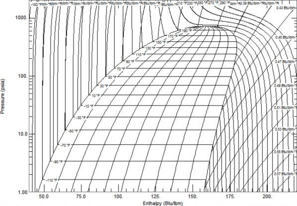
R22 P/H Diagram
Diagram created using REFPROP – NIST Reference Fluid Properties
As can be seen, the critical point of R-22 is more than 200°F, placing it well above the operating conditions of typical refrigeration systems. This can be contrasted with the CO2 PH diagram, with a critical point of 88°F. This temperature is often exceeded when ambient air is used as the condensing heat sink.
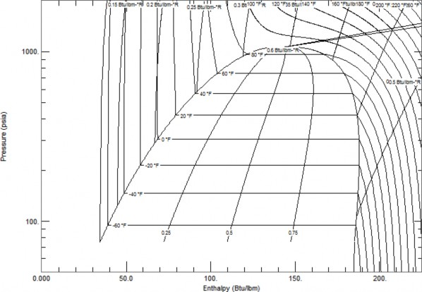
CO2 P/H Diagram
Diagram created using REFPROP – NIST Reference Fluid Properties

Environmental Benefits
Regulation in the United States regarding refrigerants has been centered on two factors, ozone depletion potential (ODP) and global warming potential (GWP).
ODP is a measure of the potential of a substance to harm the ozone layer if released into the atmosphere. ODP is a unitless number relative to a reference value, using R-11 as the reference of 1.0. Substances that have an ODP of zero are considered not to be harmful to the ozone layer.
GWP measures the potential of a substance to contribute to global warming. GWP quantifies a substance in units of equivalent pounds of CO2. For instance, R-404a has a GWP of 3940, meaning that the release of one pound of R-404a has the same global warming effect as the release of 3,940 pounds of CO2.
The table below shows the ODP and GWP of some common refrigerants.
Refrigerant | Common Name | ODP | GWP | Safety Classification |
R-11 | 1 | 4660 | A1 | |
R-12 | 0.73 | 10800 | A1 | |
R-22 | 0.034 | 1760 | A1 | |
R-32 | methylene fluoride | 0 | 677 | A2 |
R-134a | 0 | 1300 | A1 | |
R-290 | propane | 0 | 5 | A3 |
R-404A | 0 | 3940 | A1 | |
R-407A | 0 | 1920 | A1 | |
R-407C | 0 | 1620 | A1 | |
R-407F | 0 | 1824* | A1 | |
R-408A | 0.02 | 3260 | A1 | |
R-410A | 0 | 1920 | A1 | |
R448a | 0 | 1273* | A1 | |
R449a | 0 | 1397† | A1 | |
R-507A | 0 | 3990 | A1 | |
R-717 | ammonia | 0 | <1 | B2 |
R-744 | carbon dioxide | 0 | 1 | A1 |
Source: ASHRAE Fundamentals 2017, page 29.5 *Source: Honeywell Product Literature †Source: Linde Product Literature | ||||
The United States signed the Montreal Protocol in 1987, committing to eliminate the use of ozone depleting substances. All members of the United Nations eventually signed the treaty. The first phase of this treaty targeted CFCs, such as R-12. In 1992, the treaty expanded to phase out HCFCs, such as
R-22. The most recent amendment, known as the Kigali Amendment in 2016, added phasedown of HFCs.
Ironically, carbon dioxide as a refrigerant has an extremely low carbon footprint, compared to all common synthetic refrigerants. The absence of ODP and extremely low GWP make CO2 attractive as a refrigerant from an environmental and regulatory perspective, because it is already significantly below current legal limits.
The physical properties of CO2 present a unique set of considerations to ensure safety. CO2 is classified as an A1 refrigerant by ASHRAE Standard 34 and the International Mechanical Code, meaning it is non- toxic and non-flammable. However, a large enough leak in a confined space can displace available oxygen for breathing. At typical commercial refrigeration temperatures, CO2 operates at a higher pressure than synthetic refrigerants. When released at these pressures to the atmosphere, CO2 can change phase to solid form, causing restrictions in the flow that can lead to a buildup in pressure.
Asphyxiation
As an A1 refrigerant, CO2 is considered to have low toxicity and low flammability. The concern remains that a large leak of CO2 can displace existing air in a space, reducing the oxygen levels. If the oxygen levels are reduced considerably, this can lead to health hazards up to and including asphyxiation/death. Average outdoor air consists of around 400 parts per million of CO2, or 0.04%. The Occupational
Safety and Health Administration (OSHA) has set the permissible exposure limit of 5000 PPM (0.5%) for 8 hours per day (compare to most HFCs at 1000 PPM allowable, CO2 is less hazardous). The table below lists some additional concentration levels and the effects on the human body.
CO2 Concentration | Effects |
1% (1,000 PPM) | Breathing rate increases slightly. |
2% (2,000 PPM) | Breathing rate increases to 50% above normal level. Prolonged exposure can cause headaches, tiredness. |
3% (3,000 PPM) | Breathing increases to twice the normal rate and becomes labored. Weak narcotic effect. Impaired hearing, headache, increased blood pressure and pulse rate. |
4-5% (4,000 - 5,000 PPM) | Breathing increases to approximately four times normal rate, symptoms of intoxication become evident, and slight choking may occur. |
5-10% (5,000 – 10,000 PPM) | Characteristic sharp odor noticeable. Very labored breathing, visual impairment, headache, and ringing in the ears. Judgment may be impaired, followed within minutes by loss of consciousness. |
10-100% (>10,000 PPM) | Unconsciousness occurs more rapidly above 10% level. Prolonged exposure to high concentrations may eventually result in death from asphyxiation. |
CO2 at ambient pressure is heavier than air, so leak detection systems should be placed low, typically 18” above the floor or as dictated by local requirements.
Pressure
CO2 as a refrigerant operates at higher pressures than typical HCFCs or HFCs, due to the inherent thermodynamic properties of the substance. The table below shows comparable pressures for some common refrigerants at three different saturated operating conditions.
System Operating Point | R-22 | R-404a | R-407a | R-744 (CO2) |
Low Temperature Evaporation (-25°F) | 7.4 | 12.9 | -2.7 | 181 |
Medium Temperature Evaporation (+20°F) | 43.1 | 55.8 | 34 | 407.2 |
Condensing Pressure (86°F) | 158.2 | 191.4 | 165.6 | 1031.5 |
All pressures listed in psig
HFC direct expansion (DX) refrigeration systems are outfitted with a single pressure relief device located at the receiver. This pressure relief device is rated for pressures around 400 psig, depending on the refrigerant used. Additional mechanical safeties and control setpoints shut the system down around 350 psig discharge pressure to prevent any refrigerant from discharging through the pressure relief safety valve. The entire piping system is rated for working conditions above the safety relief pressure, so no secondary relief devices are necessary. If the refrigeration system shuts down due to power outage or servicing, the internal pressures do not exceed the rated pressure.
The high saturated pressure of CO2 at summertime ambient conditions exceeds the pressure rating of type K copper piping, along with most standard DX refrigeration valves. This requires the “high side” of the CO2 system to be constructed using higher pressure rated materials and installation practices, at a higher cost. To reduce overall system installed cost, the “low side” portions of a CO2 system are designed for the lower operating pressures, allowing copper to be used for the low side piping. When the system is operating normally, pressures are maintained below the rated pressure of the system.
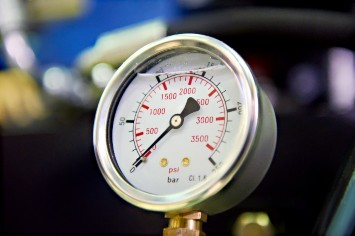
CO2 system pressure becomes a safety concern when liquid becomes trapped in a portion of the system that is not rated for the full pressure at higher temperature. Wherever a mixture of liquid and gas exist, the pressure and temperature are directly related. The table below shows the P-T chart for CO2, in increments of 5°F.
CO2 Saturation Table | |
Temperature | Pressure |
°F | psig |
-20 | 200 |
-15 | 221 |
-10 | 243 |
-5 | 266 |
0 | 291 |
5 | 318 |
10 | 346 |
15 | 376 |
20 | 407 |
25 | 441 |
30 | 476 |
35 | 513 |
40 | 553 |
45 | 594 |
50 | 638 |
55 | 684 |
60 | 733 |
65 | 784 |
70 | 838 |
75 | 895 |
80 | 955 |
85 | 1018 |
87.8 | 1055 |
Note: 87.8°F is the critical temperature of CO2, no saturated state exists above this point | |
As the temperature of a saturated mixture rises, pressure will rise until it reaches the saturation pressure in the table above. If the refrigerant pressure exceeds the rating of the piping, valves, or other components of the system, this can lead to leaks and possibly bursting of system components.
To minimize the risk of pressure buildup in the system, measures must be taken in system design to ensure that pressure cannot build up in any portion of the system. All components, valves, piping, fittings, and joining methods must be verified to ensure pressure ratings above the maximum anticipated system pressures. Pressure relief devices must be located appropriately to allow the system to vent safely in the event of a system shutdown or other event that causes pressures above system ratings. All points within the system must be allowed to vent back to the pressure relief valves without restriction. Check valves are typically utilized to allow portions of the system to vent back to receivers, where pressure relief valves are located. Any portion of the system that cannot vent back to the receiver must have its own pressure relief valve.
Pressure relief devices on traditional DX refrigeration systems are located directly on the outlet of the receiver, and then piped outdoors for safe discharge. This practice would be hazardous if applied to a CO2 system, due to the formation of dry ice.
Dry ice is simply CO2 in solid form. The PH diagram of CO2 is shown below, including the region where the solid state can exist.
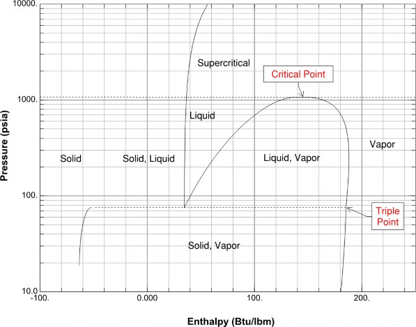
Diagram created using REFPROP – NIST Reference Fluid Properties
In a refrigeration system, there are two common conditions where this may occur. The first and potentially dangerous location is at a pressure relief valve. When a pressure relief valve is open, the refrigerant is undergoing a rapid drop in pressure from system pressure to atmospheric pressure. If liquid CO2 is being released, the PH diagram shows that a drop below the triple point pressure of 75.1 psia (60.4 psig) will result in a solid and vapor mixture. For this reason, pressure relief valves should not have any piping installed downstream of the valve. If the pressure drop happens inside the pipe, dry ice will form, blocking flow and preventing pressure from being released.
The second condition where dry ice may form is when charging the system. If system vacuum is broken with liquid, dry ice can form inside the system, again restricting flow. This condition is less dangerous because it does not cause pressure buildup beyond system ratings, but should still be avoided.
The properties of CO2 have benefits as well as challenges when compared to common synthetic refrigerants. Some of these properties have been described in previous sections as they pertain to safety and environmental considerations. The following sections will describe key properties of CO2 as they pertain to the operation of a refrigeration system.
The pressure enthalpy diagram for CO2 is shown below.
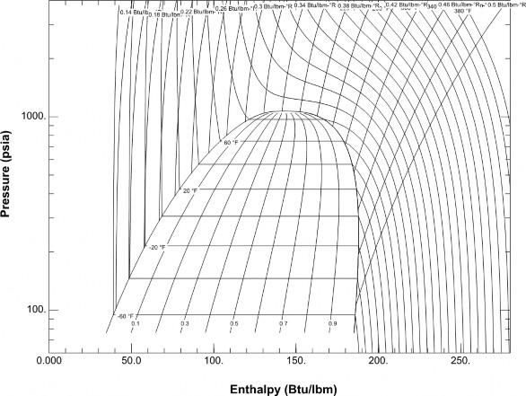
Diagram created using REFPROP – NIST Reference Fluid Properties
Several characteristics can be readily seen on the PH diagram.
Saturated region – The general shape of the CO2 PH diagram is similar to other refrigerants; only the specific values are different.
Critical point – the critical point of CO2 is 1070 psia (1055.3 psig) and 87.8°F. This is highest pressure and temperature where liquid and gas can exist simultaneously. The region above this point is considered supercritical, below this point is subcritical.
Flat constant temperature lines in the saturated region – CO2 is a pure substance, so it does not have a temperature glide between the saturated liquid and saturated vapor lines. This means evaporator temperatures will remain constant throughout the evaporator coil, allowing easy measurement of superheat.
Solid/Vapor region – below the triple point temperature of -69.8°F, CO2 exists as a mixture of solid and gas. Note that the triple point pressure is 75psi, meaning that if a liquid or saturated mixture is reduced to this pressure, it will change phase to a solid/vapor mixture. The triple point of common synthetic refrigerants is outside of the feasible range for temperature and pressure, and is not shown on most P/H diagrams.
As with other pure substances, CO2 has a direct pressure/temperature relationship in saturated condition (mixture of liquid and gas).
System Operating Point | R-22 | R-404a† | R-744 (CO2) |
Low Temperature Evaporation (-25°F) | 7.4 | 12.9 | 181 |
Medium Temperature Evaporation (+20°F) | 43.1 | 55.8 | 407.2 |
Condensing Pressure (86°F) | 158.2 | 191.4 | 1031.5 |
All pressures listed in psig †R-404a is a blend, but with negligible glide
At typical low temperature suction temperatures, CO2 operates around 180 psig. At medium temperature suction temperatures, the pressure is around 400 psig. Unlike some refrigerant blends such as R-407a, CO2 does not have a temperature glide, meaning the dew point temperature and bubble point temperature are equal at a given pressure.
Above the critical point, pressure and temperature do not have a direct relationship.
CO2 is commercially available at several different purity levels. The common names and percent purity are listed below. Hussmann recommends using CO2 with a purity equal to or greater than Bone Dry Purity.
Grade | Purity |
Industrial Grade | 99.5% |
Bone Dry (Hussmann Recommended) | 99.8% |
Anaerobic Grade | 99.9% |
Coleman (Instrument) Grade | 99.99% |
Research Grade | 99.999% |
Ultra-Pure Grade | 99.9999% |
Medical grade CO2 should not be used, due to the outlet pressure regulators typically present on tanks
The use of Bone-Dry grade ensures proper operation of the equipment and is pure enough to prevent accumulation of non-condensable gases in the system. Mixing of higher purity grades of CO2 is acceptable. Lower grades of CO2 will be less expensive, but are not recommended for use in Hussmann Purity systems. These contain higher levels of contaminants and water, and may decrease system performance. Higher levels of moisture may react with the CO2 and form carboxylic acid that can degrade component integrity. Hussmann recommends, depending on location and availability of CO2, that enough refrigerant charge be kept on site to fill the entire system.
One of the benefits of CO2 compared to synthetics is a high vapor density. R-22 has a density 0.43 lb/ft3 leaving a -25°F evaporator. CO2 in this same condition has a density of 2.2 lb/ft3, roughly 5 times more dense. In practice, this translates to smaller pipe sizes, because the same mass flow can occur at a much lower volumetric flow rate and associated velocity than most synthetic refrigerants.
1-1/8” Suction ½”Liquid 5/8” Suction 3/8” Liquid
7/8” Suction ½”Liquid 1/2” Suction 3/8” Liquid

CO2 has found use in the supermarket industry in a wide variety of system layouts. Early adoption in the United States was primarily as a low stage fluid, with a primary refrigerant providing high side cooling.
This allowed operating pressures to remain low with good efficiency. This was applied both as a pumped system and as a cascade direct expansion system. Both system types have pros and cons, and can be referenced in more detail in other documentation.
Transcritical CO2 system operate without any other refrigerant, rejecting heat removed from refrigerated cases and walk-in boxes directly to water or ambient air. A basic schematic of a CO2 transcritical system with flash gas bypass is shown below.
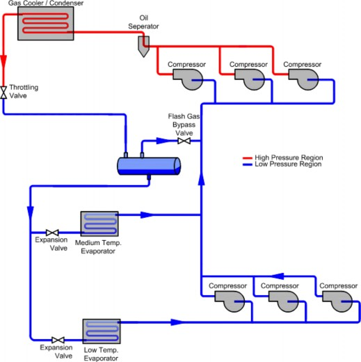
The system is divided into two stages, low and high. The low stage begins at the outlet of the high pressure expansion (throttling) valve. Here, a mixture of liquid and gas is piped into the liquid/vapor separator. From the bottom of the separator, liquid CO2 at 20-30°F is fed to the low temperature evaporators through an expansion valve. The CO2 is fully evaporated and returned to the low stage compressors as a vapor. Low stage compressors discharge into the inlet of the high stage compressors. Medium temperature evaporators are fed with the same liquid as the low temperature evaporators.
Vapor from medium temperature evaporators is piped directly to the suction inlet of the high stage evaporators. A third refrigerant stream known as flash gas is also piped directly from the top of the liquid/vapor separator through a flash gas bypass valve to the suction side of the high stage compressors.
High stage compressors take low stage discharge, medium temperature vapor, and flash gas and compress them up to a pressure sufficient to reject the heat from the system in the gas cooler/condenser. The gas cooler is named as such because the refrigerant is not technically condensing if it is operating in transcritical mode. At pressures above the critical point known as the supercritical region, the refrigerant is considered an undefined fluid, and cannot be called liquid or vapor. Depending on ambient conditions or the temperature of the heat sink, transcritical systems can operate either transcritically or subcritically. This operation is controlled primarily by the throttling valve. These operating modes will be described in more detail in the high stage section below.
System Schematic Correlation with PH Diagram
The diagram below shows the same generic system schematic, with state points identified with numbers.
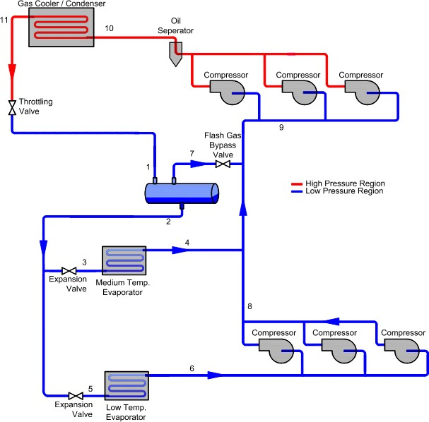
This schematic can be correlated with the PH diagram as shown below.
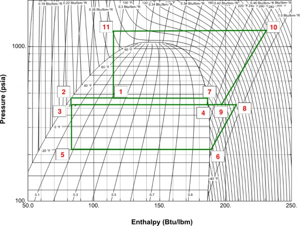
Diagram created using REFPROP – NIST Reference Fluid Properties
Entering the liquid/vapor separator
The refrigerant has left the throttling valve and is now a liquid/vapor mixture at an intermediate pressure, normally around 480 psi. Depending on the gas cooler pressure and temperature, this mixture will have a quality around 0.3, meaning it is 70% liquid, 30% vapor (by mass). The mixture separates into liquid and vapor in the separator due to the difference in density of the two states.
Leaving the liquid/vapor separator from the bottom
Located at the bottom of the vessel, the refrigerant leaves the vessel as a saturated liquid, typically around 30° F and 480 psig.
Entering medium temperature evaporators
Liquid refrigerant travels through an expansion valve and leaves at evaporator pressure. A small amount of expansion happens in the valve and the refrigerant enters as a nearly saturated liquid, at 20° F and 410 psig.
Leaving medium temperature evaporators
Refrigerant has boiled completely and has a small amount of superheat at 410 psig.
Entering low temperature evaporators
Saturated liquid from the separator has passed through the low temperature expansion valve and is now at low temperature evaporator pressure, typically around -20° F and 200 psig.
Leaving low temperature evaporators
The refrigerant has boiled completely and has a small amount of superheat at 200 psig. This is also the low temperature compressor suction.
Flash gas bypass valve
Flash gas has passed through the liquid/vapor separator as a saturated vapor, at around 480 psia. The flash gas bypass valve meters this flow to control liquid/vapor separator pressure and high stage suction superheat.
Low temperature compressor discharge
Low temperature compressor discharge - Refrigerant has been compressed to slightly above the high stage suction pressure, around 410 psi. It also has significant superheat, leaving at around 200° F.
Low temperature
High stage compressor suction
The high stage compressor suction header is the convergence point of three flows.
Low temperature compressor outlet
Medium temperature evaporator outlet
Flash gas bypass valve outlet
High stage compressor discharge
The refrigerant has been compressed and is now at the highest temperature and pressure in the system. Depending on ambient conditions, this temperature may reach 250 – 300 degrees F and 1350 - 1500 psi. In this example, this is also the inlet condition of the gas cooler. The condition at this state point can vary with fluctuations in load or temperature of the heat sink. For air-cooled systems, low ambient conditions often allow the system to operate subcritically, minimizing the pressure required and associated energy consumption. Primarily the throttling valve, along with gas cooler capacity modulation, controls the pressure at this point.
Gas cooler/condenser outlet
Heat has been removed from the refrigerant in the gas cooler. In transcritical mode, the refrigerant at this point is an undefined fluid, not liquid or gas. In subcritical mode, the refrigerant at this point is a liquid.
Throttling valve outlet
Refrigerant from the gas cooler has been reduced in pressure to the liquid/vapor separator pressure. In transcritical mode, the refrigerant here is a mixture of liquid and gas. In subcritical mode, the refrigerant is 100% liquid.

The following sections will describe operational and design aspects of the key components of the Hussmann Purity System. The schematic of this system is shown below.
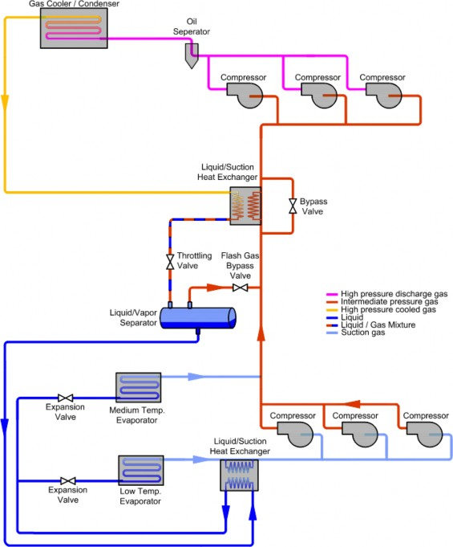
As can be seen, there are some variations from the example schematic shown in the previous section. First, there is a liquid/suction heat exchanger between the liquid feed to the low and medium temperature evaporator coils and the low temperature suction gas. The purpose of this component is to ensure completely saturated and possibly subcooled liquid is fed to the electronic expansion valves. It also served to ensure adequate superheat back to the low temperature compressors, preventing liquid floodback. This heat exchanger is equipped with series of valves to allow vapor flow to bypass the heat exchanger for superheat control. Second, a heat exchangers is used to warm the vapor entering the high stage compressors, ensuring adequate superheat. This heat exchanger has a bypass valve to control this superheat. Finally, no desuperheater is used on the low temperature compressors.
Not shown on the schematic is the liquid injection system, which allows omission of this desuperheater.
The flash tank is also known as the liquid/vapor separator. This vessel serves several purposes.
It provides a location with low velocity to allow time for the fluid leaving the high pressure expansion valve to separate into constituent liquid and vapor. It allows the vapor to bypass the majority of the low side of the system and reenter the high stage compressors.
The pressure of the flash tank is controlled by the flash gas bypass valve. This valve ensures proper flow through the medium temperature evaporators.
Flash tanks are sized to allow an appropriate interface area for proper separation of liquid and vapor, as well as volume to allow for mass fluctuations in the remainder of the system.
Low Temperature Liquid/Suction Heat Exchanger (Optional)
The low temperature liquid/suction heat exchanger transfers heat from the liquid to the vapor.
This serves two functions. The primary function is to provide additional superheat to the vapor leaving the low temperature evaporators, ensuring no liquid floodback occurs to the compressors. It also cools the liquid below the saturated condition, ensuring 100% liquid is provided to the expansion valves.
This also aids in oil flow to the compressors. This unit is sized to provide adequate heat exchange with minimal pressure drop especially on the vapor side.
Liquid/Suction Heat Exchanger Bypass System (Where Applicable)
Hussmann Purity racks utilize a series of modulating valves to allow suction gas to bypass the low temperature liquid/suction heat exchanger. These valves control based on return gas temperature, ensuring the appropriate amount of superheat entering the low temperature compressors. This system targets a minimum of 36°F compressor superheat. This also aids in oil flow to the compressors.
CO2 systems utilize electronic expansion valves (EEVs) instead of traditional thermostatic expansion valves (TXVs). Individual case controllers provide control of these valves. EEVs are necessary with CO2 due to improved response times and ability to be adjusted by the controller. These valves are typically supplied factory piped in refrigerated cases. Walk-in evaporators may be factory or field piped.
Low temperature compressors operate very similarly to traditional DX HFC compressors. Suction gas is compressed from low temperature evaporator pressure, typically around 200 psi, up to the inlet pressure of the medium temperature compressors, typically around 400 psi. As with traditional systems, compressors are cycled to maintain suction pressure. These compressors have liquid injection, to mitigate high discharge temperatures.
Evaporators for CO2 systems must be designed specifically for CO2, due to the higher operating pressures than typical HFC systems. In addition to pressure ratings, these evaporators are designed to minimize internal volume, to prevent rapid pressure buildup in the event of a system shutdown. Normal operating pressures for low temperature CO2 evaporators run at 200 psi, while medium temperature evaporators run at 400 psi or higher. Regardless of operating pressure, the evaporators must be designed to resist pressures above the pressure relief settings.
Hussmann Purity systems are available with optional hot gas defrost systems for low temperature and medium temperature evaporators. This system is described in more detail in accompanying documents.
The role of the flash gas bypass valve is to regulate the pressure in the flash tank. The “flash gas” is the vapor portion of the refrigerant fluid mixture coming from the gas cooler. This portion will vary based on loads, ambient conditions, and pressure settings in the gas cooler, normally between 25% and 50% by mass. The pressure in the tank is monitored by the controller and the flash gas bypass valve is opened wider if pressure needs to be reduced. Conversely, the valve modulates closed if tank pressure needs to be increased.
The medium temperature system employs a similar liquid/suction heat exchanger strategy as the low temperature portion of the system. Fluid leaving the gas cooler is used to provide heat to suction gas. As with the low temperature system, bypass valves are modulated to maintain appropriate superheat to the medium temperature compressors. This also provides cooling to the gas cooler outlet fluid, ultimately reducing the amount of flash gas. This heat exchanger must be rated to full gas cooler pressure, typically 1600 psi.
Medium Temperature Compressors
Medium temperature compressors also operate very similarly to traditional DX HFC compressors. Suction gas (comprised of flash gas, low temperature compressor discharge, and medium temperature evaporator suction) is compressed from medium temperature evaporator pressure, typically around 400 psi, up to the pressure required for heat rejection, up to 1350 psi. Compressors cycle to maintain suction pressure. The outlet of these compressors is the point of highest pressure and highest temperature within the entire system.
Heat Reclaim
Hussmann offers an optional heat reclaim system with Purity systems. This heat reclaim is available in several configurations. The first configuration places a CO2 coil in an air handler for direct refrigerant to air heat reclaim. The second configuration utilizes a single wall heat exchange to heat an intermediate glycol fluid, which is piped to an air handler or other system to utilize the heat. The third configuration utilizes a double wall heat exchanger for domestic water heating.
The standard configuration of this system is to pipe the heat reclaim heat exchanger in parallel with a motorized ball valve and a modulating valve. These valves modulate to bypass a portion of the compressor discharge around the heat reclaim system. Valves should be designed and set such that if the motor fails, the valve moves to a partially open position to prevent head pressure buildup.
Gas coolers are typically air cooler or adiabatic (hybrid). For air-cooled gas coolers, fans are modulated based on setpoints defined by the controller. Adiabatic gas coolers utilize wet precooling pads to cool incoming air prior to entering the gas cooling portion of the unit.
The throttling valve is the primary control for gas cooler pressure. Because temperature and pressure are independent from one another in the super-critical region, gas cooler pressure is not as closely correlated to ambient conditions as typical air-cooled condensers. Optimum gas cooler pressure for system efficiency and capacity is calculated using complex algorithms.
Hussmann applies a patented method for stable lubrication of the compressors. This low pressure (60-80 psi above MT suction) system uses standard oil controls on all compressors.
Hussmann Purity systems are compatible with products available from several control systems manufacturers, depending on owner preference. These include Danfoss, CPC, and Micro Thermo, among others. Hussmann systems come standard with factory installed battery backup systems for controllers and critical valves, to ensure system safety and prevent liquid floodback during power outages.
Emergency Back-Up Systems
Emergency back-up systems are an optional component of a CO2 system. These systems consist of a small condensing unit, fed with emergency power. This condensing unit provides cooling to an
evaporator intended to maintain flash tank temperature and associated pressure when the remaining portion of the system is off, such as during a power outage. This prevents pressure in the flash tank from rising above the pressure rating of the system, thus preventing discharge of CO2 through the pressure relief system.
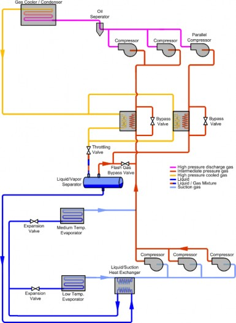
Parallel Compression
Hussmann offers parallel compression as an option.
The modification to the schematic is shown following:
With this system, the flash gas is compressed in a separate suction group from the medium temperature loads and low temperature discharge. This improves energy efficiency of the system by allowing the higher pressure “load” to be compressed at an improved COP (coefficient of performance).
(Parallel compression strategies are under development, future content to be added)

Hussmann Purity systems are installed much like a traditional DX system, with a few important differences. These differences are primarily due to the higher operating or potential pressures found in CO2 systems.
Piping materials for CO2 systems must take into account the pressure rating needed for the specific application. While various points in the system experience a range of pressures, Hussmann recommends only two rating levels. This helps ensure system safety and avoid confusion in piping. These two points are best described as low-pressure and high-pressure. The dividing points of these regions is shown in the schematic below with orange indicating high pressure and blue indicating low pressure.
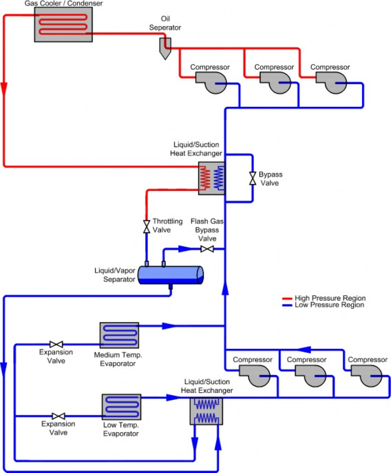
The high-pressure portion of the system begins at the outlet of the medium temperature compressors, continues through the heat reclaim system and gas cooler, and ends at the high-pressure expansion valve. Pressure relief devices set at 1600 psi protect this portion of the system. All components and piping in this portion of the system must be capable of withstanding internal pressures of more than 1600 psi.
The low-pressure portion of the system begins at the outlet of the high pressure expansion valve, and includes the remainder of the system. This includes the entire low temperature portion of the system, the flash tank, and the suction side of the medium temperature compressors. Pressure relief devices set at 650 psi protect this portion of the system. No component in the system should be rated at less than 650 psi.
To maintain safety of the system with minimal pressure relief locations and cost, bypass check valves are placed around potential restrictions in the system. These check valves allow flow back to the rack if the system is shut down, but remain closed under normal system operation. An example of this is shown below.
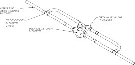
To achieve a pressure rating above 650 psi for the low side piping, several piping materials are available. These include certain copper products, copper-iron alloy products, and stainless steel.
Type K Copper – Type K copper may be used for piping in the low side of the system, up to 1-1/8” pipe size (only 7/8” for hot gas systems). As the pipe sizes get larger, the pressure ratings go down. Pipe sizes of 1-3/8” and above are not adequately pressure rated for CO2 in type K. A table of rated working pressures for Type K copper is provided below.
Type K Copper Rated Working Pressures | Mueller XHP Pipe - | |||
Nominal OD | S-6000 psi, 100°F | S-5100 psi, 150°F | 90 Bar/1300 PSI, 250°F | 130 Bar/1885 PSI, 250°F |
3/8" | 1074 | 913 | 1093 | 1093 |
1/2" | 1130 | 960 | 809 | 1093 |
5/8" | 891 | 758 | 809 | 1078 |
7/8" | 852 | 724 | 799 | 1093 |
1 1/8" | 655 | 557 | 824 | 1125 |
1 3/8" | 532 | 452 | 834 | 1112 |
1 5/8" | 494 | 420 | 824 | 1109 |
2 1/8" | 435 | 370 | 846 | 1127 |
2 5/8" | 398 | 338 | 842 | 1141 |
K-65 – K-65 is a copper alloy that contains iron, produced by Wieland. K-65 is available at a pressure rating of 120 bar (1740 psi), making it viable for transcritical CO2 systems. This piping may be used in the high or low side piping of the system, using the correct fittings and installation practices.
Note: K-65 is not approved for use in some jurisdictions, verify local coded before proceeding.
XHP – XHP is a competitor to K-65, available from Mueller. This product is available in several pressure ratings, so care must be taken to use the appropriate piping for the application. As with K-65, joining methods are similar to traditional copper refrigerant piping. Note: XHP is not approved for use in some jurisdictions, verify local coded before proceeding.
Stainless steel – prior to the introduction of K-65 and XHP to the market, stainless steel was required for use on all high side piping. This is still a viable option. For CO2 pressure rating, butt welds are not allowed for joints; appropriate fittings must be used.
As with traditional DX systems, short radius fittings are not recommended. Long radius ells are available from several manufacturers. Always be sure to use appropriate pressure rated fittings.
All welded joints should be made up using 15% silver "Silphos." Use 45% to 56% silver "Easy Flo" on sweat valves and other control devices.
Butt welds should not be used; always use appropriate fittings.
Extreme care should be taken to keep the entire system clean and dry during installation. Nitrogen gas should flow through the piping being welded to prevent oxidation (scaling) during the welding operation. A flow meter should be installed to ensure appropriate flow rates.
Joints should be allowed to air cool; the rapid cooling from a wet rag will cause strength issues in the joint leading to leaks.
Many of the best practices used for traditional refrigeration piping are applicable to CO2 system piping. Under no conditions should copper pipes touch each other, solid structure, sharp edges, other metals, foreign objects, etc., due to the risk of abrasion and resulting leaks. When necessary to cross pipes, they should be offset or insulated (and properly supported) to ensure there is no copper to copper contact, or contact with other metals. Nylon or plastic spacers (as manufactured by Hydra-Zorb) should be used between un-insulated tubing and clamps to prevent line chafing in the cases. Be sure to use high temperature inserts when supporting discharge and drain lines.
All under slab suction lines and other suction lines with vertical risers longer than 6 ft. should have a "P" type oil trap installed at the bottom. Risers greater than 16 feet tall should have an inverted trap at the top of the riser. Suction lines should be sloped downward in the direction of flow.
Individual circuit piping should be routed with a goal of equal pressure drop to all evaporators, especially for hot gas systems. The figure on the left below looks good on a schematic, but is not good piping practice multiple evaporators within one hot gas circuit. See appendix A for more information on hot gas systems.


Acceptable for electric Required for hot gas defrost or off time defrost only
Commercial grade nylon stop nuts should be used on all clamps. Support channels should be "Unistrut" P-4000 or heavier. Clamps should be in the "Unistrut" series P-2024 to 2043. Alternate channel "Super Strut" A-1200, B-1200, A-1202, B-1202 with series A-716 O.D. clamps, "Wesanco Inc." W-200, W-500 Channel with series W-6229 to W-6243 O.D. clamps, or 5-1/2” x 1-5/8” 16 gauge galvanized steel “C” stud.
All overhead suction and liquid lines should be secured with Hydra-Zorb type clamps unless on overhead horizontal runs using trapeze hangers with Insulguard saddles, which should be secured to the unistrut with zip screws. If the project is in seismic zone, piping and equipment should be braced, supported and installed to comply with location requirements. Clamp all vertical lines and lines from and to the gas cooler with unistrut at least every 6'. All horizontal lines need to be supported with unistrut at least every 8'.
Piping insulation should be Armacell "Armaflex" or Rubatex "Insul-Tube 180". All joints should be sealed with Armacell #520, Rubatex R-374 white latex paint or Rubatex "R-320" adhesive. Heat Reclaim lines should be insulated with Armacell “HT/Armaflex” or equivalent Rubatex insulation.
Suction lines for medium temperature systems should have 3/4" wall thickness insulation from fixture or coil outlet to the compressor unless otherwise noted on plans. Suction lines for low temperature systems should have 1" wall thickness insulation from fixture or coil outlet to the compressor. All discharge lines to heat reclaim coil and water heater should be insulated with 1/2" wall thickness insulation. Liquid lines should be insulated with 1/2" wall thickness insulation. Insulation may be slipped over piping, only split when insulation cannot be slipped on.
Relief Valves
It is very important that the proper piping be installed for the relief valves. Hussmann will supply the 4 relief valves and the change-over for the low side. These valves will automatically open at 650 psi.
For the high side 2 relief valves and a change-over will be supplied in which the valves are regulated for 1600 psi. Two copper lines and one stainless steel line must be piped outside. It is very important that local code requirements be followed.
High pressure relief line 1600 psi must be in “Stainless pipe schedule 40 with a diameter of 3/4”.
Low pressure relief line from the Flash tank must be installed “ 7/8 type K “.
Low pressure relief line from the Defrost return must be installed “ 7/8 type K “.
Relief valves must be installed with the discharging side towards the bottom or the side. It is very important that relief valves do not face towards the top as there could be water and ice accumulation and force the relief to burp.
Always use brass fittings on the bottom of the changeover.
Safety line must slope to the compressor room and traps must be avoided. (Hydraulic pressure relief)

There are two primary reasons to test the system with pressure. The first test, typically at a lower pressure, is used for leak testing. The second test, typically at a higher pressure, is used for pressure rating of a system.
Leak Testing
All refrigeration lines under the floor should be tested and inspected prior to backfilling. Stub-up risers from the floor should be tested with dry nitrogen to 600 psi. The applied pressure should remain overnight and approval of these tests should typically be made by the customer. Overhead lines should be tested in an identical manner. When the refrigerant connections have been completed at cases, test the balance of the system to 600 psi. All the piping should be tested in the floor and overhead prior to tying into the cases and rack.
All refrigeration lines should be tested with and hold 600 psig for 24 hours before connecting to cases/walk-ins. All refrigeration lines shall be tested with and hold 600 psig (lower if manufacturer of coils or cases limits leak test). Final leak testing should be completed with the compressor suction and discharge valves closed, and all other valves in the system open, with the exception of the transducers which must be kept closed during pressure testing and evacuation procedures (some local codes may require higher test pressures). Leak testing should be performed with an Inficon D-TEK Electronic Leak Detector. Refrigeration piping will not be acceptable unless it is leak tight. If any leaks are found, isolate the leaks, discharge the gas and repair the leaks, and then repeat the test. When testing has been completed, release all pressure. If test of overhead and case piping is not possible before connecting
to the rack, the rack should be leak tested before the system is connected.
Pressure Testing
Pressure testing is performed on systems to ensure safety of the system, and verify the rest of the system will not burst before the pressure relief device opens. Applicable codes or authorities having jurisdiction typically determine the procedure for pressure testing.
Evacuation/Charging
The vacuum of the system is the most important part of the startup. It is very important to ensure that all the individual line tests have been completed, and all the nitrogen has been removed before completing the vacuum process. Using the correct pump (minimum of 10 CFM) and technique for the vacuum is very important. Please follow the steps below to obtain the target of 250 microns.
It is very important that you have a copper manifold to join your connections on the high and low side simultaneously. Ensure that the connections you use for your pump can be manually closed.
A maximum of 2 vacuum pumps will be allowed, adding up to at least 10 CFM. It is important that the oil in the pumps be changed regularly until the micron level has been reached:
First oil change after 4 hours of use
2nd oil change after 12 hours
3rd oil change after 24 hours
A few things should be considered when starting the vacuum process:
Ensure that your system is 100% free of leaks.
All the connections from the vacuum pump to the rack must be soft drawn copper lines 5/8”.
Ensure that the connections have been tested before you start your pump.
All the caps on the rack and in the cases need to be installed and tightened.
All the valve packings need to be tightened.
Ensure that your liquid filters are installed before starting your vacuum.
All the transducers on the cases and the TC Rack should be installed before your vacuum.
Crankcase heaters should be turned on.
We require our systems to maintain 250 microns when the pumps have been stopped for 2 hours. It is important that our start up sheet be filled out and a picture of the gauge indicating 250 microns be sent to Hussmann.
There should be a minimum of 1000 lbs. of bone dry CO2 with 99.8% purity. Avoid using medical grade CO2; the 500 psi pressure regulators on these tanks prevents proper system charging. Once the vacuum is broken, charge the system thru the main filter drier. Tanks should be used without the dip tube for charging until the system is above 100 psi, to prevent formation of dry ice. After 100 psi, the dip tube may be used, drawing liquid CO2 from the tanks for faster charging. Close the outlet of the flash tank so this will give you chance to fill the flash tank. Once you have 3 site glasses floating, stop filling the flash tank. (Note: If a heat reclaim system is operating, only 2 site glasses should be floating.)
Once the flash tank is floating 3 glasses, make sure you have a minimum of 40 percent cooling load on the medium temperature portion of the system. The system will not operate with less than 40 percent of the medium temperature load. Running with low temperature load only will result in unacceptably high discharge temperatures, causing oil breakdown.
Oil Charging
Oil selection is dependent on compressor manufacturer. Copeland compressors may use either
BSE-85 or Emkarate 68 oil. Bitzer compressors or a blend of both manufacturers requires BSE-85 Oil. Compressor are shipped with oil. Initial oil charging should be performed while the system is under vacuum. Check all compressors for proper oil levels and adjust if necessary. Add sufficient oil to fill
the oil reservoir. Unless otherwise noted, oil is provided by the contractor (other than the oil shipped in the compressors). An oil change typically requires one gallon of oil per compressor, plus the amount necessary to fill the reservoir. Never charge oil directly into the oil separator; oil should be added at
the reservoir or compressors only.

Startup Sequence
Prior to starting the rack up or putting power to the rack, make sure all the electrical connections in the rack panels and compressors are tight. All case controller panels for all coolers and freezers, and cases panels supplied by rack manufacturer, should be checked.
At least 40% of the rack evaporator load should be available prior to rack startup.
Several tests should be performed on the rack, prior to running. (Note: Control must be powered up.)
Do a phase loss test to make sure all the suction valves on the rack shut down.
Once the phase loss is reset, all the suction valves should start to open slowly.
Simulate a rack shutdown to ensure case controllers automatically close all EEVs.
Simulate a low superheat on the all the cases to verify the liquid and suction will shut down. If not this could cause excessive liquid flood back to the rack.
If heat reclaim is present on the rack, verify the 3-way valve fails in Gas cooler mode.
Note: this is very important if the heat reclaim system is not complete.
Leak detection in all boxes and motor room must be tested, and fully functional. The exhaust fan should be in operation prior to charging of the system.
If there is a leak in the motor room, it is not recommended to shut down the rack, as this will result in more discharge.
Verify rotation on fans on gas cooler. If using an adiabatic gas cooler make sure water is piped and the PLC is set up.
Verify that the shipped-loose temperature sensor used to control the high pressure expansion valve is properly installed at the outlet of the gas cooler and is reading properly.
When starting the rack run all the compressors other than the lead with the VFD drive. After everything else running the lead (VFD) compressor should be turned on.
When starting the low temperature system using scrolls, it is recommended to bump the compressor to check rotation direction.
Check all the oil controls then pull the control plug on the oil control system to make sure the compressor shuts down and alarms.
The oil regulator value (Swagelok) should be set for 575 psig. This should be checked again once the rack is running at 100 percent.
After the system has been in operation for a minimum of 7 days, all expansion valve strainers must be cleaned.
Check the system operating temperatures and defrost time. The length and number of defrost cycles shall be set in accordance with case manufacturers' recommendations and owner provided schedule for defrost.
A final defrost schedule shall be provided to the store manager during the week of grand opening as well added to the door of the rack. All work within start-up procedure needs to be recorded in a logbook kept in the motor room.
After the compressor is started, continue charging until the system has sufficient refrigerant for proper operation. During start-up, no compressor is to be left operating unattended and unwatched until the system is properly charged with refrigerant and oil.
After Startup
After the rack has run 48 hours and loaded to 100 percent, all the filters, on the suction, liquid and oil should all be changed as well as the oil. Hussmann supplies filters and oil for startup and enough for one change after startup. Oil change procedure is defined in the following section.
Oil and filter should be changed again after 3 weeks to ensure that the oil and filters are clean after the initial installation (materials and labor typically supplied by installer).
Leak test with a CO2 sniffer type tool.
Defrost lengths and pressures should be verified to ensure that energy consumption is at a minimum.
Always check that each case after defrost the temperature exceeds 32°F in the evaporator and the coil is clear.
If the coil is not clearing using the recommended defrost settings call Hussmann for review.
Ensure that all the programming is finished and well understood by servicing contractor.
Ensure that all temperature sensors and pressure sensors are well calibrated.
Ensure all control panels are closed.
Record CO2 level in receiver for future reference.
Fill out start up form and send to Hussmann a maximum of 3 weeks after start up.
Oil Changes
Oil Changes should be accomplished following the procedure below: DAY 1
2 technicians, 8hrs (estimate, individual results may vary)
Hussmann suggest replacing the oil separator and suction filters on the first day.
Proceed with a pump down and ensure that flash tank does not exceed 80% of capacity, close liquid and suction ball valves
Depressurize discharge and replaced discharge (Temprite) filter and suction filter, which can be done in a second step.
DAY 2
5 technicians, 6hrs (estimate, individual results may vary)
It is recommended that 1 person supervise the shutdown for the ball valve, compressor and watch the pressure.
Evaluate the amount of compressors running on the medium temperature.
If possible, drain the oil on the first half of the compressors on medium temperature and fill those with new oil ready to run.
Lower the oil level in the oil reservoir by about 80-90%.
When these steps are completed, pump the medium temperature system partially to 80% of the tank, always have a gauge on tank pressure.
If you have a back up condensing unie with plate heat exchangers at the tank, start manually to keep the pressure as low as possible.
Close all suction ball valves on all low and medium circuits as well as liquid ball valves (or solenoids)
Turn all compressors off.
Finish draining the oil reservoir and fill it as quickly as possible, if you have an electric oil pump that will help to shorten the time.
2 other technicians can drain the oil on the other compressors.
When the oil reservoir is full and ready to start again, the medium temperature load must be gradually moved to the compressors, the oil of which has been drained and ready to start again.
Complete the oil change on the other medium temperature compressors as well as those of the low temp compressors.
Restart the low temperatures gradually.
The oil used for oil change is the POE RL68HB for Copeland and BSE85K for Bitzer.
The time was based on an average dual temp rack, 8 compressors on medium temp and 3 compressors on low temp.
APPENDIX A – HOT GAS DEFROST
CO2 Transcritical Systems Training Manual
Revision 0, February 2018
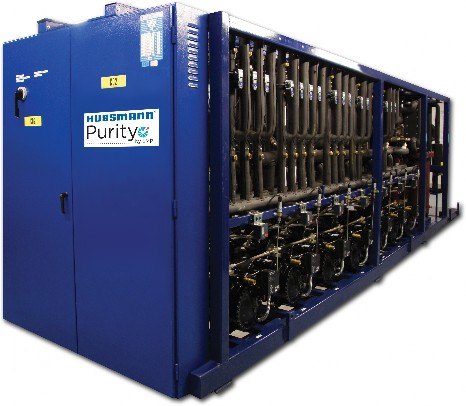

Introduction
Hussmann offers hot gas defrost as an option with Purity Transcritical CO2 systems. This document provides specific information about this option, intended to serve as a supplement to the Hussmann CO2 Transcritical Training Manual.
Schematic
The standard hot gas defrost schematic for Hussmann Purity systems is provided below.
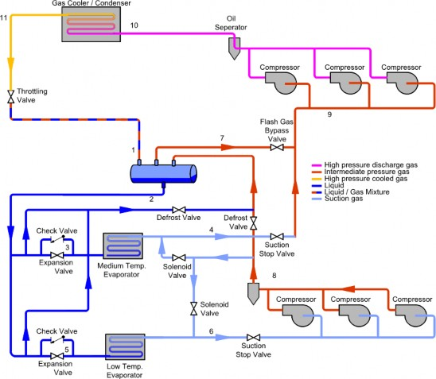
Hot gas defrosts are performed by low temperature compressors. A minimum of two compressors are used for defrosts. For a -22°F group, the suction pressure is maintained to a minimum of 200 psig with a charge transfer from medium temperature to low, which opens on demand and only during the defrost cycle. During normal operation, the transfer is closed. The gas defrost type used is a reverse cycle hot gas system, and when initiated, the electronic expansion valve (EEV) of the circuit starts closing and when it is completely closed, the hot gas solenoid is energized.

The main discharge valve is an electronic valve, which during the defrost cycle operates from 100% to about 25% opening to keep a pressure of approximately 565 psig. The valve will return to 100% when defrosting is complete.
Defrost return is sent back to the flash tank, and the pressure is controlled by two pressure regulating valves in parallel. Return pressure is adjusted from 500 to 526 psig depending on location. These valves are in pressure control mode at all times.
When the circuit is completely defrosted and the drip cycle is finished, the circuit suction pressure regulating valve goes into pressure drainage mode. This drainage is performed in 5 steps. The circuit suction modulating valve will re-open at different percentages every 2 minutes in order to drain the excess pressure in the system, before opening to 100%.
Hot Gas Defrost – Additional Considerations
For systems with hot gas defrost, the following additional considerations need to be made to ensure proper operation of the system:
Piping practices are similar to HFC hot gas systems. Expansion loops and changes of direction should be used to account for expansion and contraction of piping lengths due to changes in temperature.
Hot gas systems subject suction lines to higher temperatures, reducing the pressure rating. This means the maximum pipe size for Type K copper is 7/8”, instead of the 1 1/8” allowed for non- hot gas suction lines.
Hussmann Corporation 12999 St. Charles Rock Rd. Bridgeton, MO 63044-2483
Ph: 314.291.2000
Printed in U.S.A. © 2018 Hussmann Corporation CO2_Transcritical_Systems_Training_Manual_042718